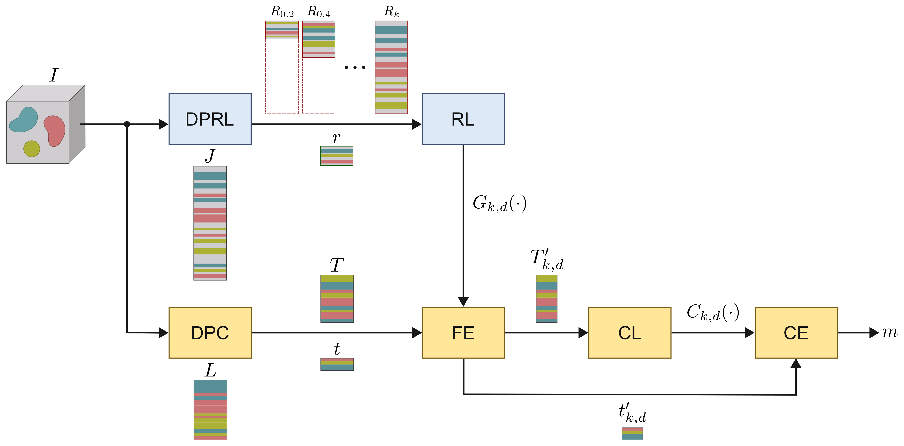
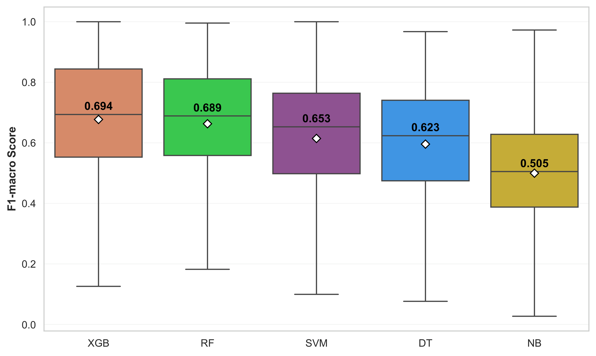
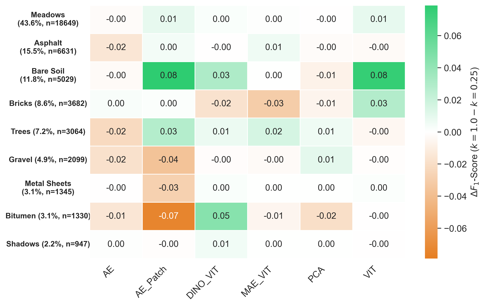
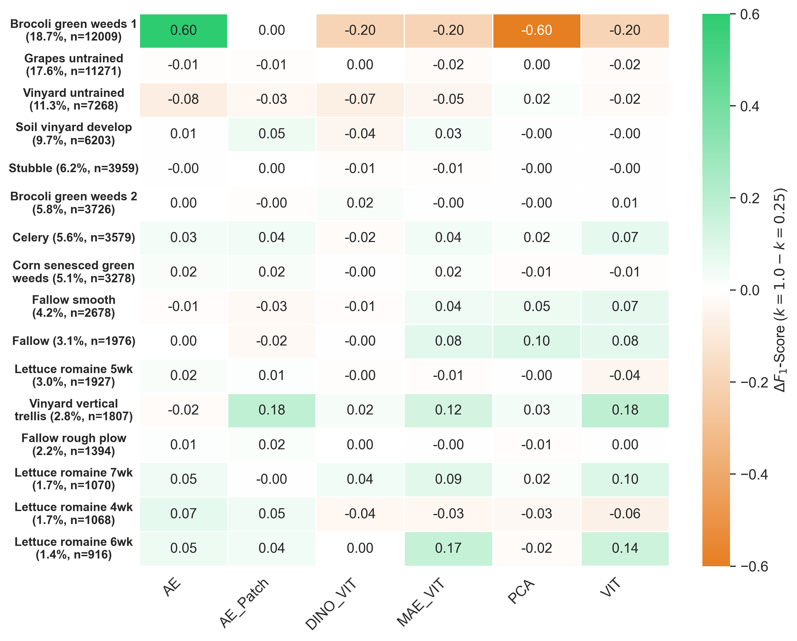
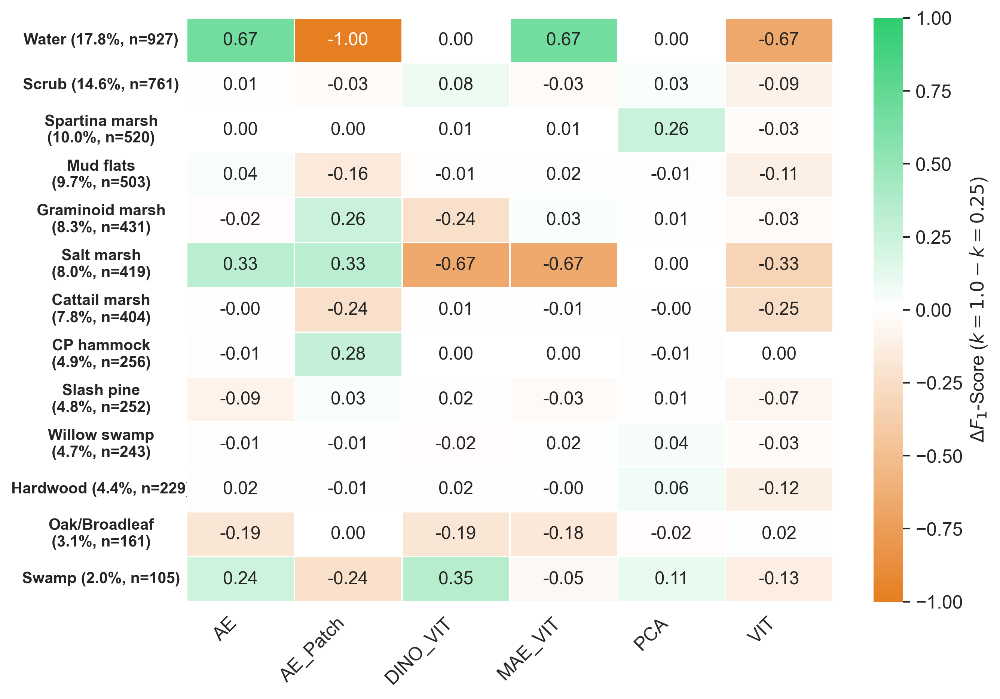

Impact of Training Set Size on Representation Learning for Hyperspectral Image Classification
Abstract
Hyperspectral Image (HSI) classification relies heavily on representation learning (RL) to manage extreme dimensionality. Advanced spatial-spectral architectures, such as Vision Transformers (ViT) and Self-Supervised models (MAE, DINO), offer state-of-the-art latent embeddings but impose massive computational burdens when trained on complete hyperspectral scenes. In this study, we systematically investigate the impact of training data scarcity—specifically the subset proportion k—on the stability, convergence, and downstream classification efficacy of latent spaces.
We evaluate traditional pixel-wise baselines (PCA, AE) alongside modern spatial-spectral transformers across four benchmark datasets (Pavia University, Indian Pines, Salinas Valley, Kennedy Space Center). Our comprehensive analysis demonstrates that robust, highly discriminative representations can be successfully learned using significantly reduced training subsets (as low as 25%). By evaluating class-wise Delta (Δ) performance profiles, we identify the exact stability thresholds for minority and majority classes under extreme scarcity constraints. These findings establish a computational blueprint for scaling advanced HSI representation models without sacrificing topological fidelity or classification accuracy.
Proposed Methodology
The pipeline consists of extracting spatial-spectral patches from a reduced subset of the hyperspectral image (e.g., 25% to 100% of the training pool), learning a compact latent space through advanced models (like ViT, MAE-ViT, or DINO-ViT), and using these robust embeddings to train downstream classifiers.

1. Classifier Stability and Performance
Distribution of overall stability and performance (F1-macro) of the five base classifiers across all datasets, training proportions (k), and latent dimensions (d).
Key Insight: This distribution emphasizes the robustness of the XGBoost classifier, which consistently dominates in F1-Macro stability across varying latent dimensions and data scarcity levels, significantly outperforming linear and traditional tree-based models.

2. Latent Convergence Analysis
Performance convergence (F1-macro) using the XGBoost classifier across varying latent dimensions (d) and data proportions (k=0.25 vs. k=1.0).
Key Insight: The convergence grid demonstrates a critical "elbow point" in latent capacity. Models typically reach peak representation efficiency around d=32 to d=64. Crucially, the asymptotic behavior remains structurally identical even when training data is aggressively reduced from 100% to 25%, proving the spatial-spectral models' resilience.

3. Class-wise Delta Performance Profile
We analyze how extreme data scarcity (k=0.25 vs k=1.0) impacts specific classes. The following heatmaps illustrate the Delta (Δ) F1-Score per class for each dataset (Δ = F1k=1.0 - F1k=0.25, CL = XGB, d = 64).
Key Insight: By calculating the precise difference in class-wise F1-Scores, these heatmaps expose the true vulnerability of minority classes. Green cells denote negligible performance loss under scarcity, while orange/red cells pinpoint the specific land-cover classes that suffer catastrophic feature collapse when representation learning is deprived of full spatial context.
Pavia University

Indian Pines

Salinas Valley

Kennedy Space Center (KSC)
